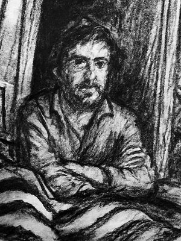

← Torna alla home
Fuori di qui
Segnalibri.
Posti della rete che mi piacciono e che consiglio: amici, letture, lavori fatti bene.
-

Poesie · Milano 1948 · Namibia 2003 Riccardo Di Paola Mio zio. Insegnò latino e greco al Liceo Manzoni di Milano e scrisse versi per tutta la vita, che fece stampare in pochissimi esemplari. Qui sono raccolte le sue 149 poesie, con la vita, un glossario e le immagini che ritornano. dudelab.github.io/riccardo-di-paola - Newsletter · Mirko Floria Appunti sparsi su quel che c’è La newsletter di Mirko Floria, amico, scrittore e autore del romanzo «Storia di un tale». Ogni due settimane una riflessione su arte, scrittura e su come funziona la mente. mirkofloria.substack.com